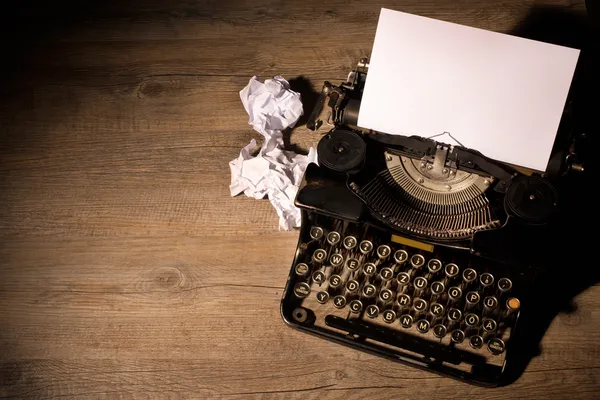
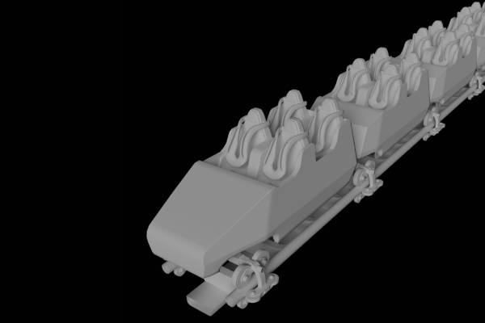

Film
Mijn grootste passie is film. Ik kijk ze graag en ik maak ze graag. Met duizenden DVD's in mijn collectie van de schattigste animatiefilms tot de gruwelijkste horrorfilms, ben ik ook een verzamelaar van fysieke media. Samen met een vriendin maak ik passieprojecten in de hoop ze ooit uit te brengen en er geld mee te verdienen.
Schrijven
Verder hou ik me ook creatief bezig met schrijven.
- Screenplays voor de films die ik maak (en de films die ik uiteindelijk besluit niet te maken)
- Gedichten en liedjesteksten
- Natuurlijk ook code!


3D
Mijn liefde voor animatiefilms heeft ervoor gezorgd dat ik ook geïnteresseerd werd in de technieken hierachter. Daarom hou ik me ook veel bezig met 3D models maken en ze daarna te animeren. Maar ook 3D landschappen en logo's zijn geweldig om te creëren.